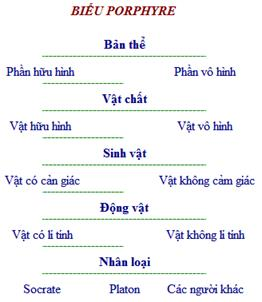

Ba điều lầm lẫn làm loạn danh thực
Trong các triết gia đời Tiên Tần. Tuân Tử là người bàn về danh đầy đủ nhất.
Khổng Tử đề xướng thuyết “Chính danh” là để làm cho “vua ra vua, tôi ra tôi, cha ra cha, con ra con”., ông “chính danh tự” để “định danh phận”. Chủ trương “chính danh” của ông mang nhiều ý nghĩa luân lí hơn ý nghĩa luận lí.
Mạnh Tử chính cái danh “người”, bảo: “Không biết có cha, có vua, thì không phải là người mà là cầm thú”., ông còn chính cái danh “vua”, bảo: “Hại nhân, hại nghĩa là quân tàn tặc. Giết quân tàn tặc là giết một đứa, một thành quèn. Nghe nói giết một đứa tên Trụ, chưa nghe nói giết vua”. Chính danh của họ Mạnh cũng nhằm mục đích luân lí nhiều hơn.
Mặc gia và Danh gia[334] thì trái lại, chính danh với mục đích luận lí hơn là luân lí.
Tuân Tử viết thiên CHÍNH DANH là vừa để “làm sáng tỏ người sang, kẻ hèn”, vừa để “phân biệt những vật giống nhau, khác nhau” (minh quí tiện, biệt đồng dị). Chủ trương chính danh của ông gồm đủ cả ý luân lí lẫn luận lí.
Trước hết ông định nghĩa cho danh, nói cái công dụng của danh, rồi, tiến lên một bước, nêu ra cái nguyên lí chế danh gồm ba mục., sau cùng, đề cập đến ba điều lầm lẫn (tam hoặc) làm loạn danh, thực.
Thời viễn cổ, thuở thần quyền còn toàn thịnh, người ta không ý thức rõ ràng danh xưng của của một sự vật chỉ là phù hiệu của sự vật đó, mà cho rằng danh xưng của sự vật chính là thực thể của sự vật. Bởi thế người ta mới tin rằng nắm được cái danh, ấy là nắm được cái thực (sự vật), cho nên, chẳng hạn, muốn trù ếm người nào thì cứ trù ếm cái tên người đó, muốn vái Phật, muốn cầu nguyện Chúa, thì cứ van vái cái tên của Phật, cứ cầu nguyện cái tên của Chúa, là được rồi[335].
Ở Trung Quốc, thần quyền suy sút nhiều từ đời Xuân Thu, đời đó, người ta đã không còn tin như xưa rằng danh xưng với thực thể (sự vật) là một. Tuy nhiên, mãi tới đời Hán, vẫn có triết gia muốn cho rằng “cái “chân” của sự vật và cái thực thể của sự vật là bất khả phân[336], nói cái danh là nói cái chân”.
Cũng như các Danh gia và Mặc gia[337] đời Tiên Tần, Tuân Tử định nghĩa “danh” một cách thật giản dị. Ông nói:
“Cái danh là để trỏ cái thực” (Danh dĩ chỉ thực.[338] – Chính danh).
Nhờ cái danh đã định mà phân biệt được cái thực, sự vật vì thế mới không lẫn lộn cái nọ với cái kia:
“Danh đã định thì thực rõ ràng” (Danh định nhi thực biện.[339] – Chính danh).
Tóm lại, danh tức là tên gọi hoặc khái niệm, - cái mà người ta dùng để đại biểu cho sự vật khách quan trong tư tưởng và ngôn ngữ.
Các sự vật khách quan không nhất nhất giống nhau về hình tượng, cũng như phẩm chất. Hình tượng có to nhỏ, vuông tròn., phẩm chất có sang hèn, xấu tốt…, công dụng của danh, theo Tuân Tử, là, như ở trên kia đã nói, vừa để làm cho sang hèn được sáng tỏ, vừa để làm cho giống với khác được biện biệt, khiến cho người ta “nghe cái danh mà hiểu rõ cái thực” (Danh văn nhi thực dụ[340]. – Chính danh).
Nghe nói tên “quả bóng”, biết rõ ngay là một vật bằng cao su, hình tròn, “khác” với “cuốn sách” gồm những tờ giấy in và có hình vuông., nghe cái tên “ông tướng”, biết ngay đó là một viên sĩ quan “sang” hơn anh “binh nhì” v.v…
Nguyên lí chế danh của Tuân Tử gồm ba yếu mục:
- Tại sao cần có danh (Sở vi hữu danh),
- Lấy gì làm tiêu chuẩn, để phân biệt những sự vật giống nhau, khác nhau (Sở duyên dĩ đồng dị),
- Những nguyên tắc chế danh (Chế danh chi khu yếu).
Những nguyên tắc chế danh này đồng thời cũng là những nguyên tắc “dụng danh” (dùng danh).
Tại sao cần có danh
Người ta sống là sống với người khác và sống giữa những sự vật, từ buổi sơ khai đã như thế rồi. Trong đời sống cộng đồng, con người phải nhờ vào ngôn ngữ để trao đổi tình ý với nhau, về bản thân mình và về các sự vật chung quanh. Mà yếu tố cốt cán cấu thành ngôn ngữ là danh, không có danh thì không thể có ngôn ngữ mà sinh hoạt cộng đồng vì vậy cũng sẽ giảm sút, khó khăn. Đó là lí do tại sao phải có danh, tại sao cần chế danh. Danh chế ra phải có tính cách thống nhất và danh dùng phải cho chính xác, nếu không thì sẽ không tránh được mối lo không hiểu nhau, hiểu lầm nhau và mối hoạ công việc bị bê trễ. Muốn được như vậy, Tuân Tử chủ trương: tất cả danh đều phải do đấng quân vương chế định, chứ không thể để mạnh ai nấy đặt:
“Muôn vật hình đều khác nhau, thấy khác hình thì lòng người biết rằng không phải cùng vật., nếu không lập định cái danh để phân biệt vật này với vật khác thì danh và thực trở nên tối tăm và rối ren, gỡ không ra mối, sang hèn không rõ., giống khác không phân. Như vậy, có cái mối lo là sự hiểu biết của ta sẽ không được rõ ràng và công việc sẽ gặp cái vạ bê trễ. Cho nên người trí giả muốn phân biệt vật, mới chế danh để trỏ vật, trước là để rõ sang với hèn, sau là để phân biệt giống với khác. Một khi sang hèn đã rõ, giống khác đã phân, thì không có cái lo sự hiểu biết của ta không rõ ràng, không có cái vạ công việc bê trễ. Đó là cái lí do tại sao phải chế danh” (Dị hình li tâm, giao dụ dị vật, danh thực huyền nữu, quí tiện bất minh, đồng dị bất biệt. Như thị tắc chí tất hữu bất dụ chi hoạn, nhi sự tất hữu khốn phế chi hoạ. Cố trí giả vi chi phân biệt, chế danh dĩ chỉ thực, thượng dĩ minh quí tiện, hạ dĩ biệt đồng dị. Quí tiện minh, đồng dị biệt, như thị tắc chí vô bất dụ chi hoạn, sự vô khốn phế chi hoạ. Thử sở vi hữu danh dã.[341] – Chính danh).
“Bậc vương giả đặt ra danh, danh đã định thì thực được rõ ràng” (Cố vương dã chi chế danh, danh định nhi thực biện.[342] – Chính danh).
“Bẻ quẹo nghĩa, tự tiện đặt danh để làm rối loạn những danh chính đáng, khiến cho dân sinh nghi hoặc, khiến cho mọi người sinh nhiều chuyện tranh biện, kiện tụng thì bị gọi là đại gian” (Tích từ thiện tác danh dĩ loạn chính danh, sử dân nghi hoặc, nhân đa biện tụng, tắc vị chi đại gian.[343] – Chính danh).
Lấy gì làm tiêu chuẩn để phân biệt những sự vật giống nhau, khác nhau
Tuân Tử bảo: “Lấy thiên quan”.
Hai chữ “thiên quan” này trỏ ngũ quan (tai, mắt, mũi, lưỡi, thân) và tâm (ý thức)[344], sở dĩ lấy thiên quan làm tiêu chuẩn phân biệt sự đồng dị của sự vật, là vì:
“Con người ta vốn đồng loại, đồng tình, bởi thế thiên quan của mọi người, đối với mọi vật, cảm giác có giống nhau. Cho nên có thể suy cái cảm giác của chính mình mà phỏng đoán được rằng cái cảm giác của người khác cũng tương tự. Thế rồi căn cứ vào đó mà chế ra danh làm một thứ ước lệ để hiểu nhau khi nói về vật. Hình thể, mầu sắc, đường nét thì lấy mắt mà phân biệt., thanh âm trong đục, to nhỏ[345], mỗi vật một khác, thì lấy tai mà phân biệt., ngọt, đắng, mặn, nhạt, cay, chua, vị mỗi vật một khác thì lấy miệng (lưỡi) mà phân biệt., thơm, thối, tanh tưởi, nồng nặc, mùi mỗi vật một khác[346], thì lấy mũi mà phân biệt., đau, ngứa, lạnh, nóng, trơn tru, sần sùi, nặng nhẹ, cảm giác khác nhau thì lấy hình thể mà phân biệt., những ý tình vừa lòng, nhàm chán, mừng, giận, thương, vui, yêu, ghét thì lấy tâm mà phân biệt (…). Ấy nhờ thế mà phân biệt được giống với khác để mà chế ra những cái danh giống nhau, khác nhau” (Viết: duyên thiên quan. Phàm đồng loại, đồng tình giả, kì thiên quan chi ý vật dã đồng, cô tỉ phương chi nghĩ tự nhi thông, thị sở dĩ cộng kì ước danh dĩ tương kì dã. Hình, thể, sắc, lí dĩ mục dị., thanh âm thanh trọc, yểu hoại, kì thanh dĩ nhĩ dị., cam, khổ, hàm, đạm, tân, toan, kì vị dĩ khẩu dị., hương, xú, phân, uất, tinh, tao, lậu, dậu, kì xú dĩ tị dị., tật, dưỡng, thương, nhiệt, hoạt, phi, khinh, trọng dĩ hình thể dị., duyệt, cố, hỉ, nộ, ai, lạc, ái, ố, dục dĩ tâm dị (…) thử sở duyên nhĩ dĩ đồng dị dã.[347] – Chính danh).
Những nguyên tắc chế danh
Có thể tóm tắt như sau mấy nguyên tắc chế danh của Tuân Tử:
“Cùng loài thì cùng danh, khác loài thì khác danh (…), làm sao cho thực mà khác thì danh cũng phải khác, để không thể lẫn lộn được, làm sao không có vật nào cái thực cùng mà cái danh lại không cùng” (Đồng tắc đồng chi, dị tắc dị chi (…), sử dị thực giả mạc bất dị danh dã, sử đồng thực giả mạc bất đồng danh dã.[348] – Chính danh).
Chữ “THỰC” ở đây có nghĩa là vật loại: cùng loài chim thì gọi là chim, cùng loài ngựa thì gọi là ngựa.
Danh có “ĐƠN DANH” và “KIÊM DANH”. “Đơn danh đủ hiểu thì dùng đơn danh, đơn danh không đủ hiểu thì dùng kiêm danh” (Đơn túc dĩ dụ tắc đơn, đơn bất túc dĩ dụ tắc kiêm. - Chính danh).
Đơn danh như “gà”, “vịt”, “ngựa”, kiêm danh như “gà mái”, “ngựa trắng”, “chó săn”.
Ngoài đơn danh và kiêm danh ra, Tuân Tử còn phân biệt “CỘNG DANH”, “ĐẠI CỘNG DANH”, “BIỆT DANH” và “ĐẠI BIỆT DANH”. Có thể mượn biểu Porphure trong các sách Luận lí Tây phương để biểu thị các danh này của Tuân Tử:

Biểu này do Porphure, một nhà luân lí học thời cổ chế ra để thuyết minh mối quan hệ giữa “chủng” và “loại”. Dùng thuật ngữ của Tuân Tử mà nói thì cái danh “bản thể” trong biểu Porphyre là “đại cộng danh” – cái cộng danh bao trùm hết thảy, không còn một “cộng danh” nào ở trên nữa., các danh Socrate, Platon là một “đại biệt danh”, không còn một “biệt danh” nào ở dưới nữa. Đến như những danh “vật chất”, “sinh vật”, “động vật” thì:
“Vật chất” đối với “bản thể” là một “biệt danh”, mà
“vật chất” đối với “sinh vật” thì là “cộng danh”.,
“Sinh vật” đối với “vật chất là “biệt danh”, mà
“sinh vật” đối với “động vật” thì “cộng danh”.,
“Động vật” đối với “sinh vật” là “biệt danh” mà
“động vật” đối với “nhân loại” thì là “cộng danh”[349].
Không có cái danh nào vốn đúng, không có cái danh nào vốn thực, chỉ là theo ước lệ mà gọi, ước lệ theo quen rồi thì là đúng, thì danh thành thực danh. Thoạt kì thuỷ, gọi con gà là con quốc cũng được, không thể nói gọi thế là không đúng, nhưng một khi nhiều người đã cùng gọi là con gà, cái danh con gà đã thành cái danh ước lệ dùng quen rồi thì không thể gọi khác được, gọi khác là sai.
Giữa “danh” và “thực”, vốn cũng không có mối liên quan nội tại nào, chẳng qua là theo ước lệ gắn “danh” cho “thực”, cho nên mối liên quan giữa “danh” và “thực” mới phát sinh.
Thế nhưng có cái danh này phải hơn, hay hơn cái danh khác: hễ danh mà giản dị, vắn tắc và không ngang nghĩa, ngược nghĩa, ấy là danh phải và hay. Một trái cây kia giống hình bàn tay nắm, người ta gọi ngay nó là trái phật thủ, rồi, luôn tiện, gọi cái cây sinh ra trái đó là cây phật thủ., lá cỏ nọ cúp lại khi có tay người đưa lại gần, người ta gọi ngay cỏ đó là “cây” mắc cỡ, rồi, nhân đó, gọi hoa “cây” đó là hoa mắc cỡ., con vật kêu meo meo thì gọi ngay là con mèo., con chim kêu quà quạ thì gọi ngay là con quạ. Những danh “quả phật thủ”, “cây mắc cỡ”, “con mèo”, “con quạ” đều giản dị, vắn tắc và không ngang nghĩa, trái nghĩa mà hợp với hình nắm tay, vẻ mắc cỡ v.v…, theo Tuân Tử đều là những cái danh hay[350].
Trong khi chế danh, phải lưu ý đến sự trạng: có khi bề ngoài hai vật khác nhau mà thật ra hai vật vẫn là một thì gọi là hoá, ví dụ nước và băng (nước lạnh thì đóng thành băng)., có khi, trái lại, hai vật bề ngoài giống nhau mà thực sự lại là khác nhau., băng, nước không là đồng thực mà là nhất thực., hai con ngựa không là dị thực mà là nhị thực…
“…Rồi sau theo mà chế danh. Cùng loài thì cùng tên, khác loài thì khác tên. Đơn danh đủ hiểu thì dùng đơn danh., đơn danh không đủ hiểu thì dùng kiêm danh, nếu đơn và kiêm không có gì trái nhau thì đặt chung cho một “cộng danh”[351].
Muôn vật dù nhiều, vẫn có lúc muốn gọi gộp tất cả, bởi vậy mới gọi gộp là “vật”. Cái danh “vật” là một “đại cộng danh” (…). Có lúc lại muốn gọi tách ra “chim”, muông”. Cái danh “chim”, “muông” là những “đại biệt danh”[352].
Không có cái tên nào vốn đúng, chỉ là theo ước lệ mà gọi, ước lệ theo quen rồi thì là đúng, trái với ước lệ thì là không đúng. Không có cái danh nào vốn có cái thực cả, chỉ là theo ước lệ mà gọi, ước lệ theo quen rồi thì danh thành thực danh.
Có cái danh vốn hay: thẳng, gọn, dễ dàng mà không ngang nghĩa, ngược nghĩa thì là hay.
Vật có khi bề ngoài giống nhau mà thực lại khác, có khi bề ngoài khác nhau mà thực lại giống, điều đó cần phân biệt. Hễ bề ngoài giống mà thực khác thì, tuy hợp được, vẫn gọi là hai thực (hai vật). Bề ngoài biến, thực (thể) vẫn là một, tuy có khác, thì gọi là “hoá”. “Hoá” mà thực (thể) vẫn thế thì vẫn gọi là một thực. Điều đó phải xem xét, căn cứ vào thực mà định là một hay hai (định mối tương quan giữa số danh và số thực). Đó là những nguyên tắc cốt yếu của việc chế danh”. (…nhiên hậu tuỳ nhi mệnh chi: đồng tắc đồng chi, dị tắc dị chi. Đơn túc dĩ dụ tắc đơn, đơn bất túc dĩ dụ tắc kiêm., đơn dữ kiêm vô sở tương tị tắc cộng, tuy cộng bất vi hại hĩ. Tri dị thực giả chi dị danh dã, cố sử dị thực giả mạc bất dị danh dã, bất khả loạn dã., do sử đồng thực giả mạc bất đồng[353] danh dã. Cố vạn vật tuy chúng, hữu thời nhi dục biến cử chi, cố vị chi vật., vật dã giả, đại cộng danh dã (…) Hữu thời nhi dục thiên cử chi, cố vị chi điểu thú., điểu thú dã giả, đại biệt danh dã (…).
Danh vô cố nghi, ước chi dĩ mệnh, ước định tục thành vị chi nghi, dị vu ước tắc vị chi bất nghi.
Danh vô cố thực, ước chi dĩ mệnh thực, ước định tục thành, vị chi thực danh.
Danh hữu cố thiện, kính, dị nhi bất phất, vi chi thiện danh.
Vật hữu đồng trạng nhi dị sở giả, hữu dị trạng nhi đồng sở giả, khả biệt dã: Trạng đồng nhi vi dị sở giả, tuy khả hợp, vị chi nhị thực. Trạng biến nhi thực vô biệt nhi vi dị giả, vị chi hoá[354], hữu hoá nhi vô biệt, vị chi nhất thực. Thử sự chi sở dĩ kê thực định số dã. Thử chế danh chi khu yếu dã.[355] – Chính danh).
BA ĐIỀU LẦM LẪN LÀM LOẠN DANH THỰC
Đối với các học thuyết đời Tiên Tần, Tuân Tử đều có lời phê bình, bác khước trong thiên Phi thập nhị Tử. Ngoài ra, đứng trên quan điểm chính danh, ông cho rằng các biện giả và Mặc gia đều đã phạm vào ba điều lầm lẫn, làm loạn danh thực.
Ba điều đó là:
- Lầm lẫn dùng danh loạn danh,
- Lầm lẫn dùng thực loạn danh và
- Lầm lẫn dùng danh làm loạn thực.
Ông nói: “Bị khinh nhờn chẳng nhục”, “đấng thánh nhân chẳng tự yêu mình”, “giết trộm chẳng phải là giết người”: Đó là lầm ở chỗ dùng danh mà làm loạn danh. Gẫm cái duyên do tại sao chế ra danh mà xét kĩ xem thế nào là xuôi thì có thể cấm được cái tệ hại dùng lầm danh mà thành ra làm loạn danh.
“Núi vực bằng nhau”, “người ta vốn muốn ít”, “thịt loài vật (ăn cỏ và ăn thóc) chẳng làm cho thêm ngon miệng”, “chuông lớn chẳng làm cho thêm vui tai”: Đó là lầm ở chỗ dùng thực mà loạn danh. Gẫm cái duyên do tại sao có sự đồng dị giữa những cái thực mà xét kĩ xem thế nào là đúng, thì có thể cấm được cái tệ hại dùng lầm thực mà thành ra loạn danh.
“Phi nhi yết doanh”[356] và “bò ngựa chẳng phải là ngựa”: Đó là lầm ở chỗ dùng danh mà làm loạn thực. Gẫm cái ước lệ, những nguyên tắc cốt yếu của việc chế danh, dùng điều cho là phải, bỏ điều cho là trái thì có thể cấm được cái tệ hại dùng lầm danh mà thành ra loạn thực”. (“Kiến vũ bất nhục”, “Thánh nhân bất ái kỉ”, “sát đạo phi sát nhân dã”: thử hoặc vu dụng danh dĩ loạn danh giả dã. Nghiệm chi sở dĩ vi hữu danh, nhi quan kì thục hành, tắc năng cấm chi hĩ. – “Sơn uyên bình”, “tình dục quả”, “sô hoạn bất gia cam, đại chung bất gia lạc”: thử hoặc vu dụng thực dĩ loạn danh giả dã. Nghiệm chi sở duyên dĩ[357] đồng dị nhi quan kì thục điều tắc năng cấm chi hĩ. – “Phi nhi yết doanh”, “Hữu[358] ngưu mã phi mã dã”: thử hoặc vu dụng danh dĩ loạn thực giả dã. Nghiệm chi danh ước, dĩ kì sở thụ, bội kì sở từ, tắc năng cấm hĩ.[359] – Chính danh).
“Bị khinh nhờn chẳng nhục” là thuyết của Tống Khanh. Sách Tuân Tử thiên Chính luận chép: “Thầy Tống Tử nói: “(…) người ta đều cho rằng bị khinh nhờn là nhục, cho nên đánh nhau. Biết bị khinh nhờn là chẳng nhục thì chẳng đánh nhau”.
Tống Tử cho rằng bị khinh nhờn không có nghĩa là bị nhục.
“Đấng thánh nhân chẳng tự yêu mình”, “giết trộm chẳng phải là giết người” đều là thuyết của Mặc gia. Thiên Đại thủ, sách Mặc Tử nói: “Yêu người chẳng chừa mình ra ngoài, mình ở trong số người được yêu. Mình trong số người được yêu, tình yêu dành cho cả mình nữa. Yêu mình theo chủ trương “luân liệt[360] là yêu người”. (Ái nhân bất ngoại kỉ, kỉ tại sở ái, ái gia ư kỉ, luân liệt chi ái kỉ, ái nhân dã).
“Yêu mình, theo chủ trương “luân liệt” là yêu người., vậy không yêu mình là không yêu người, mà thánh nhân chẳng yêu người, cho nên chẳng yêu mình”.
“Thiên Tiểu thủ, sách Mặc tử nói: “Người ăn trộm là người, nhiều người ăn trộm chẳng phải là nhiều người, không có người ăn trộm chẳng phải là không có người. Sao rõ điều đó? - Ghét nhiều người ăn trộm chẳng phải ghét nhiều người, muốn không có người ăn trộm chẳng phải muốn không có người. Đời đều cho thế là phải. Nếu thế là phải thì tuy người ăn trộm là người, yêu người ăn trộm chẳng phải là yêu người (…), giết người ăn trộm chẳng phải là giết người” (Đạo nhân nhân dã. Đa đạo phi đa nhân dã, vô đạo phi vô nhân dã. Hề dĩ minh tri? Ố đa đạo phi ố đa nhân dã, dục vô đạo phi dục vô nhân dã., thế tương dữ cộng thị chi. Nhược thị[361] tắc tuy đạo nhân nhân dã, ái đạo phi ái nhân dã (…) sát đạo phi sát nhân dã).
Nói như Tống Tử, tức là chia tách hẳn hai cái danh “vũ” (khinh nhờn) và “nhục” mà sự thực thì “nhục” nằm ngay trong danh “vũ” (hễ bị khinh thì là nhục), ai cũng nghĩ như vậy, nếu không nhục thì không gọi là bị khinh được. Thực ra, danh chế ra là để phân biệt cái giống nhau và cái khác nhau, mà “bị khinh nhờn” và “nhục” thì giống nhau ở chỗ cùng liên thuộc một khái niệm, vậy thì không thể nói: khi bị khinh nhờn, không phải là bị nhục.
“Mình” và “người” trong câu “yêu mình (…) là yêu người” của Mặc Tử là hai cái danh đối lập. – “mình” không bao hàm ý nghĩa “người” (khác), “người” (khác) cũng không bao hàm ý nghĩa “mình”. Vậy không thể nói: “Yêu mình là (…) yêu người”, để rồi từ đó, kết luận rằng: “thánh nhân chẳng yêu người” được.
Trái lại, cái danh “trộm” có bao hàm ý nghĩa “người”[362] – trộm cũng là người như những người khác -. Vậy không thể nói: “Giết trộm chẳng phải là giết người”.
Nói như Tống Tử và Mặc gia là lầm lẫn “dùng danh làm loạn danh”. Cứ gẫm cái nguyên lí chế danh – yếu mục “tại sao cần có danh”, trong đó, có nói rõ mối tương quan giữa cộng danh và biệt danh – thì thấy rõ.
“Núi, vực bằng nhau” là thuyết của Huệ Thi[363]., “người ta vốn muốn ít” là thuyết của Tống Khanh., “thịt loài vật chẳng làm cho thêm ngon miệng, chuông lớn chẳng làm cho thêm vui tai” là thuyết của Mặc gia.
“Vẫn biết đứng về phương diện cá thể của cái thực mà nói thì “núi có khi thấp, vực có khi cao”, có khi vực ở nơi cao và núi ở nơi thấp, thì đáy vực bằng với đỉnh núi thật[364]. Có nhiều người đôi khi “tình nên ít”!, đối với một số người, có khi “thịt loài vật chẳng làm cho thêm ngon miệng, chuông lớn chẳng làm cho thêm vui tai”. Thật có vậy, nhưng nếu vì vậy mà cho ngay là núi nào cũng bằng vực, người nào cũng đều nên ít tình., đối với bất cứ ai, “thịt loài vật chẳng làm cho thêm ngon miệng, chuông lớn chẳng làm cho thêm vui tai” thì quả là lấy tình hình đặc biệt trong một thời gian nào đó của một cá thể nào đó làm tình hình phổ biến chung của hết thảy những vật cùng loại và cùng mang danh cá thể kia. Thế cho nên mới nói rằng “phổ biến hoá như vậy là lấy thực làm loạn danh” (Trích dịch Phùng Hữu Lan: Trung Quốc Triết Học Sử, trang 380-381). Chỉ cần quan sát trực tiếp bằng “thiên quan” ta, xem có phải núi, vực nào cũng bằng nhau cả không, có phải tình người ta, ai cũng muốn ít không, có thật là đối với bất cứ ai, thịt loài vật chẳng làm cho thêm ngon miệng, chuông lớn chẳng làm cho thêm vui tai cả không. Cứ dựa vào “thiên quan” – tiêu chuẩn để phân biệt những sự vật giống nhau và khác nhau – mà xét, thì ta sẽ thấy ngay cái lối “phổ biến hoá” nói trên là độc đoán và sai lầm.
“Phi nhi yết doanh”, “hữu ngưu mã phi mã dã” là chữ trong Mặc Kinh. Xin tạm gác mấy chữ “Phi nhi yết doanh” vì tồn nghi, mà chỉ xin nói về mấy chữ “Hữu ngưu mã phi mã”:
Thiên Kinh hạ, trong Mặc Kinh chép: “Ngưu mã chi phi ngưu mã[365], khả dữ chi đồng, thuyết tại kiêm”, nghĩa là: “cái danh bò ngựa bao gồm bò và ngựa, nói: “bò ngựa không phải là bò” cũng được, mà nói “bò ngựa là bò” cũng vẫn được”. Tuân Tử cho rằng: nói “bò ngựa không phải là ngựa (hoặc bò) là chỉ vì cái danh “bò ngựa” mà dính bò với ngựa lại làm một cái thực. Như vậy là khiên cưỡng vì danh., sự thực thì: “ngựa (hoặc bò), biểu thị trong cái danh “bò ngựa” tự nó, vẫn riêng là ngựa (hoặc bò) chứ? Thế cho nên nói rằng: bảo bò ngựa không phải là ngựa (hoặc bò), là lấy danh loạn thực. Cứ suy nghĩ cho kĩ về cái ước lệ chế danh, theo đó, cái danh “ngựa” (hoặc bò) bao giờ cũng biểu thị cái thực “ngựa” (hoặc bò) thì thấy rõ ngay tính cách khiên cưỡng trong lời nói kia của Mặc gia.
*
* *
Danh gia Công Tôn Long khi nghiên cứu danh, bàn về “chỉ” (tức khái niệm. Phật gia gọi là “cộng tướng”), nói “ngựa trắng không phải là ngựa” (Bạch mã phi mã)., Mặc gia thì bảo: “Nói bò ngựa không phải là bò cũng được, mà nói bò ngựa là bò cũng vẫn được”. So với Danh gia thì Mặc gia lập luận đã gần với thường thức hơn. Tuân Tử thì hoàn toàn đứng trên quan điểm thường thức mà lập luận, khi ông bài bác ba điều mà ông cho là những lầm lẫn làm cho danh thực lẫn lộn.
[334] Danh gia: Mặc Tử, Kinh Thuyết Hạ: “Chính danh là dùng cái danh đúng để xác định vị trí của cái thực, cái danh kia ngưng ở cái chỗ trỏ cái thực kia., cái danh này, ở chỗ cái thực này” (Chính danh giả bỉ thử. Bỉ thử khả, bỉ bỉ chi ư bỉ, thử thử chi ư thử).
Công Tôn Long Tử, Danh Thực Luận: “Danh mà chính thì mới xác định được cái thực kia, cái thực này. Cái danh kia chỉ trỏ cái thực kia, cái danh này chỉ trỏ cái thực này” (Kì danh chính tắc duy hồ kì bỉ thử yên).
[335] Được rồi: Trong lãnh vực tôn giáo thì như vậy, nhưng trong lãnh vực chính trị thì người ta vẫn cứ khăng khăng vững tin rằng “nắm được cái danh, ấy là nắm được cái thực”: khoác được cái danh “ông vua”, ấy là đương nhiên phải được hưởng thụ những quyền uy, lợi lộc mà một ông vua được hưởng. Nho gia, bắt đầu từ Khổng Tử, rồi Mạnh Tử, Tuân Tử không chấp nhận điều đó. Thuyết Chính danh của Nho gia chủ trương rằng giá trị cái danh không ở tự thân cái danh mà ở trong ý nghĩa mà cái danh ấy đại biểu., ý nghĩa mà cái danh “vua” đại biểu là lòng thương yêu dân., ý nghĩa mà cái danh “tôi” đại biểu là lòng trung với vua, với nước. Vua mà không yêu dân thì cái danh “vua” ấy bất chính… cần phải sửa lại cho đúng.
[336] Bất khả phân: Đỗng Trọng Thư, Xuân Thu Phồn Lộ, Thâm Sát Danh Hiệu: “Cái danh sinh từ cái chân, không có cái chân thì không có cái danh (…) Nói danh tức nói chân” (Danh sinh ư chân, phi kì chân, phất dĩ danh (…) Danh chi vị ngôn, chân dã).
[337] Mặc gia: Doãn Văn Tử, Đại Đạo: “Danh để gọi cái hình (cái thực)” (Danh giả, danh hình giả dã).
[338]名以指實。(Goldfish).
[339]名定而實辨。Chữ “biện”, sách in là “hiện”. (Goldfish).
[340]名聞而實喻。(Goldfish).
[341]異形離心，交喻異物，名實玄紐，貴賤不明，同異不別。如是則志必有不喻之患，而事必有困廢之禍。故知者爲之分別，製名以指實，上以明貴賤，下以辨同異。貴賤明，同異別，如是則志無不喻之患，事無困廢之禍。此所爲有名也。
[342] 故王者之製名，名定而實辨。(Goldfish).
[343]析辭擅作名以亂正名，使民疑惑，人多辨訟，則謂之大姦。(Goldfish).
[344] Ý thức: Chỗ khác, họ Tuân dùng chữ THIÊN QUÂN để trỏ tâm, hiểu như ý thức.
[345] To, nhỏ: Nguyên văn chữ Hán là “điều vu” (調竽). Phương Hiếu Bác chú thích, bảo phải đọc như “yểu hoại” (窕壞), nghĩa là nhỏ to. [Chữ “hoại” 壞 tôi chép theo lời giải thích hai chữ 調竽 trên trang http://www.chinabaike.com/dir/cd/D/197885.html; chữ trong sách không có bộ “thổ” bên trái. (Goldfish)].
[346] Một khác: Nguyên văn chữ Hán là: hương, xú, phân, uất, tinh, táo, sai, toan. Phương Hiểu Bác cắt nghĩa: “uất” là mùi vật mục nát, “sai, toan” là do hai chữ “lậu, dậu” (漏庮) viết lầm, “lậu” là mùi hôi của ngựa., “dậu” là mùi hôi của trâu., “tinh” là mùi hôi của lợn., “tao” là mùi hôi của chó. Đây, chúng tôi xin dịch thoát, cho khỏi rườm.
[347]曰：緣天官。凡同類，同情者，其天官之意物也同，故比方之疑似而通，是所以共其約名以相期也。形，體，色，理以目異；聲音清濁，調竽，奇聲以耳異；甘，苦，鹹，淡，辛，酸，奇味以口異；香，臭，芬，郁，腥，臊，灑，酸，奇臭以鼻異；疾，養，滄，熱，滑，鈹，輕，重以形體異；說，故，喜，怒，哀，樂，愛，惡，欲 以心異 (…)此所緣而以同異也。
[348]同則同之,異則異之(…)使異實者莫不異名也, 使同實者莫不同名也。
[349] Cộng danh: “Đại cộng danh” và “đại biệt danh” của Tuân Tử tương ứng với “đại danh” và “loại danh” trong Mặc Kinh.
[350] Danh hay: Cây xương rồng, quả long nhẫn, hoa lồng đèn, con bê… cũng đều là những danh xưng vừa gọn, vừa dễ hiểu, rất tiện dụng đều là những danh hay cả.
[351] Cộng danh: Ví dụ: ngựa là đơn danh, ngựa trắng là kiêm danh., thú vật là cộng danh của ngựa và ngựa trắng (cả của bò, bò vàng, dê, voi…).
[352] Biệt danh: Như trong biểu Porphyre ở trên, từ trên xuống dưới là lần lần “biệt” ra, từ dưới lên trên là lần lần “cộng” lại.
[353] Bất đồng: Bản Tuân Tử Tập Giải của Tạ Dung và Lư Văn Siêu, đời Thanh, chép “mạc bất dị danh”. Chúng tôi theo Vũ Đồng, tác giả Trung Quốc Triết Học Đại Cương.
[354] Vị chi hoá: Tạ Dung và Lư Văn Siêu đã lấy trường hợp “chim rẽ hoá thành chuộc đồng (!) làm tỉ dụ để cắt nghĩa câu này. Chúng ta có thể lấy trường hợp “ngài hoá thành bướm”, “nòng nọc biến thành cóc”, “bọ gậy (lăng quăng) biến thành muỗi” làm tỉ dụ.
[355]然後隨而命之：同則同之,異則異之。單足以喻則單，單不足以喻則兼，單與兼無所相避則共，雖共不爲害矣。知異實者之異名也，故使異實者莫不異名也，不可亂也；猶使同實者莫不同名也。故萬物雖眾，有時而欲遍舉之，故謂之物，物也者，大共名也(…)有時而欲偏舉之，故謂之鳥獸；鳥獸也者，大別名 也(…)
名無固宜，約之以命，約定俗成謂之宜，異於約則謂之不宜。
名無固實，約之以命實，約定俗成，謂之實名。
名有固善，徑，易而不拂，謂之善名。
物有同狀而異所者，有異狀而同所者，可別也。狀同而爲異所者，雖可合，謂之二實。狀變而實無別而爲異者，謂之化；有化而無別，謂之一實。此事之所以稽實定數也，此製名之樞要也。
[356] Phi nhi yết doanh: Các nhà chú thích – trừ Phương Hiếu Bác – đều nói: “Bốn chữ PHI NHI YẾT DOANH (非而謁楹) này chưa hiểu nghĩa là gì”. Phương Hiếu Bác thì nói: “Yết” là do chữ “VỊ” (là bảo) (謂)., chữ “Doanh” nghĩa như 盈 (cũng đọc là “doanh”, nghĩa là “đầy”, là “chứa”., “Phi” là bài xích, phỉ bác lẫn nhau, PHI NHI YẾT DOANH là lời Mặc gia phê bình thuyết LI KIÊN BẠCH của Công Tôn Long. Trắng và dắn đến là thuộc tính của đá, đều hiện hữu đủ trong đá, nghĩa là cùng chứa lẫn nhau trong đá, thế mà Công Tôn Long lại nói “vô kiên đắc bạch, vô bạch đắc kiên” (không có dắn thì được trắng, không có trắng thì được dắn), nghĩa là khẳng định rằng hai thược tính dắn và trắng của đá “tương phi” nhau thay vì “tương doanh”.
[357] Duyên dĩ: các bản trên mạng chép: “duyên vô dĩ” 緣無以. (Goldfish).
[358] Hữu: Phương Hiếu Bác bảo: Chữ “hữu” (有) này đồng nghĩa với chữ “hựu” (又) nghĩa là: lại, và, thêm.
[359]“見侮不辱”，”聖人不愛己”，”殺盜非殺人也”：此惑于用名以亂名者也。驗之所以爲有名而觀其孰行，則能禁之矣。”山淵平”，”情欲寡”，”芻豢不加甘，大鍾不加樂”：此惑于用實以亂名者也，驗之所緣以同異而觀其孰調，則能禁之矣。”非而謁楹”，”有牛馬非馬也”：此惑于用名以亂實者也。驗之名約，以其所受，悖其所辭，則能禁之矣。
[360] Luân liệt: tức chủ trương của Di Chi, một Mặc giả, được nhắc trong sách Mạnh Tử” “Á vô sai đẳng, thi do thân thuỷ”, nghĩa là “Yêu không phân đẳng cấp, thi hành thì từ người thân trước”.
[361] Nhược thị: Các bản trên mạng chép: “Nhược nhược thị” 若若是. (Goldfish).
[362] “Người”: Chúng tôi viết theo ý Phùng Hữu Lan (Trung Quốc Triết Học Sử, trang 30). Trần Đại Tề cắt nghĩa hơi khác, cho rằng: cái danh “người” bao hàm ý nghĩa “trộm” (Tuân Tử Học Thuyết, trang 133).
[363] Huệ Thi: Huệ Thi nói: “Sơn trạch bình” chứ không nói: “sơn uyên bình”. Trạch là cái chằm.
[364] Núi thật: Có sách giảng khác: vũ trụ vô biên, thì núi và vực cũng như nhau vì đều nhỏ hết, không phân biệt được cao thấp. Đó là vấn đề tương đối. Đa số những nguỵ biện này, Huệ Thi và Công Tôn Long không giảng và đời sau mỗi người giảng mỗi khác.
[365] Phi ngưu dã chứ không phải “Ngưu mã chi phi mã dã”.